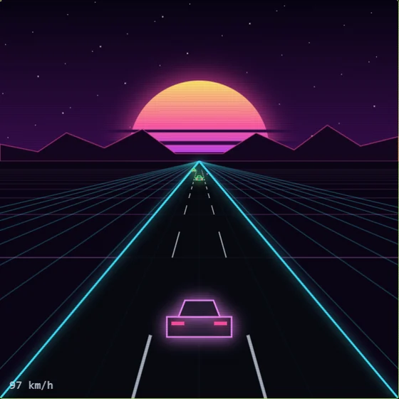
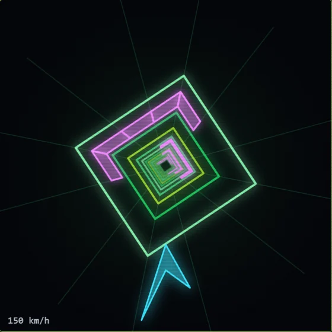
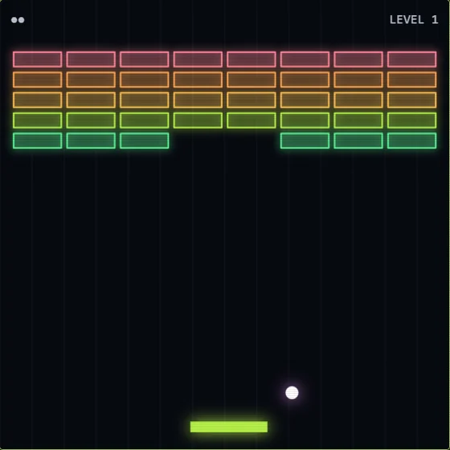
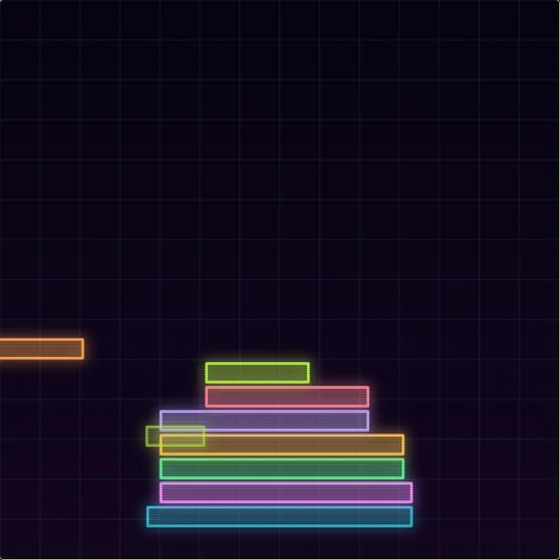
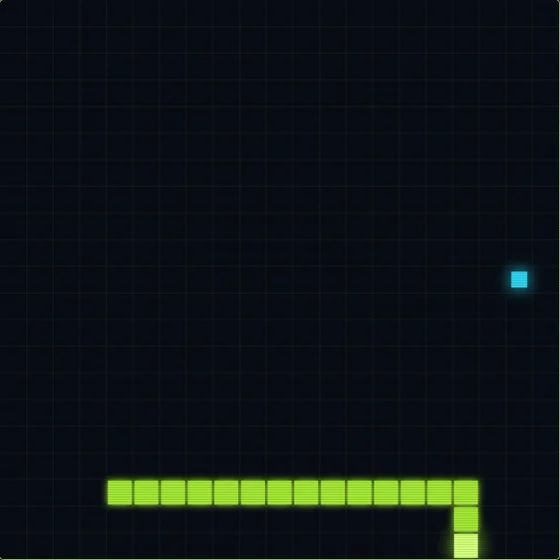

$ cat rules.txt
> RULE 1: one connected system. Add a task once and it shows up on the board, the calendar and the focus timer.
> RULE 2: work earns play. Finished focus sessions bank break time, and break time is the only thing that unlocks the arcade.
> RULE 3: your deck is yours. No account, no cloud, no subscription. It runs offline and saves to your own computer.
> _
$ ls modules/
Nine modules, one list of tasks. Press 1 to 9 to jump between them, or / to type a command.
Click a module to see it on the screen up top.
Work earns play.
Every focus session you finish banks break time. Break time is the only thing that unlocks the arcade. Playing spends it, and when it runs out, you go back to work.
No willpower required. The games are the reward, and you can't get to them any other way.
- 01 pick a task
- 02 finish a focus session
- 03 bank the break
- 04 spend it in the arcade

$ ls arcade/
Five games, each with its own soundtrack made right inside the app. The music speeds up when the game does.




$ ./garden --status
Under the focus timer sits a neon grid, and a plant grows on it. One level per finished session, twelve levels per plant.
Full grown, it joins the grid for good and you pick the next one from five random choices: fern, cactus, bonsai, sunflower, tulip, palm, vine or cherry blossom.
Quit a session early with RESET or SKIP and the growing plant loses a level. It never dies. Months later the grid is a record of every hour you put in.
$ try the command bar
The app runs on a command bar. So does this page. Type /help.
grindcade web shell. type /help for commands.
$ cat pricing.txt
GRINDCADE
$0
- All nine modules
- Five arcade games, with music
- The focus garden
- Runs offline, no account
- Windows and Mac
GRINDCADE+ COMING WITH 1.0
$3.99 a month
or $29 a year
- Sync: your deck on every computer
- Every new arcade game as it lands
- New themes for the whole app
- Cancel anytime
Planned for early 2027. The app itself stays free.
$ man install
WINDOWS Run the installer. It installs for you only, no admin prompt. The app isn't code-signed yet, so Windows may show "Windows protected your PC". Click More info, then Run anyway.
MAC Unzip and drag Grindcade into Applications. The app isn't signed by Apple yet, so run this once in Terminal before the first launch:
xattr -cr /Applications/Grindcade.app